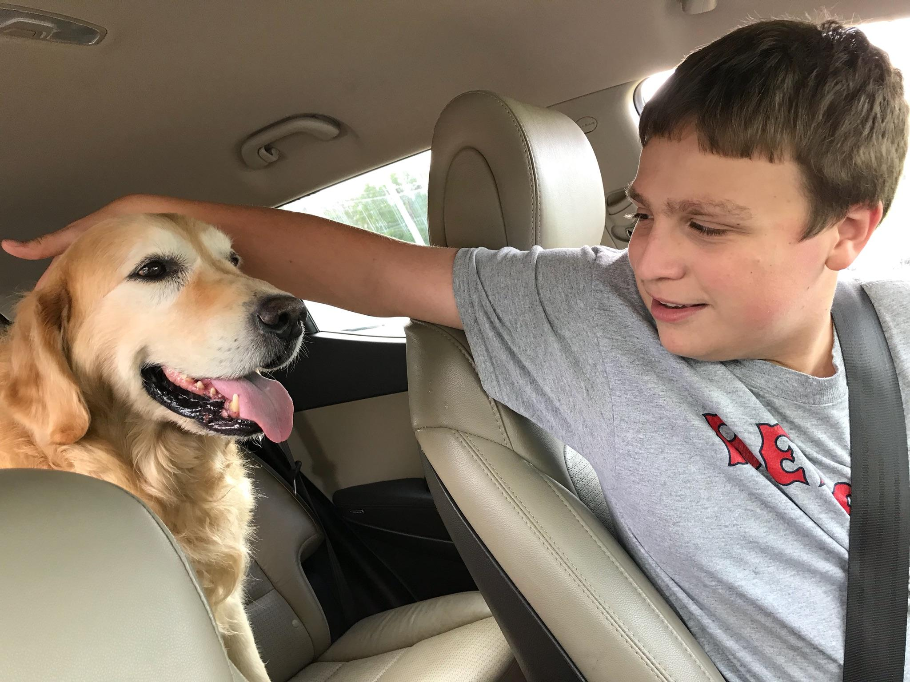

Samuel Rubin
My Bio
I used to always think that colledge was super far away, I suppose its probably because I never thought I'd actually get here! Ive moved around alot in my life! Most would say too much, but say what you will after living in 13 different places you meet alot of people and you see alot of faces. My dad always said "you only get one chance to make a first impression", I guess I kinda took that to heart since my own personal motto is either make them remember you or do something so insane they cant forget you. If it isn't apparent from class I'm pretty talkitive, I guess not really the social norm for a programmer but hey I've come this far not going to change now! I suppose I should actually say some stuff about my Highschool before I just list them all out. I went to keefe tech in framingham, in my freshman year I toured 4 different shops before settling on programming and over the course of the 4 years in my programming shop I was taught how to program basic apps and the like. However my passion was never web design I was always more interested in either videogame programming or robotics, robotics typically taking up most of my attention. I went to skills usa for robotics and placed second although covid hit and stopped me from going to states. But going into colledge I chose game design after some deliberation, and that about brings us full circle!
Since I haven't really wrote anything about my hobbies this seems like as good a place as any to write about them! When I first moved to holliston I played alot of soccer and hung out with a bunch of kids in my general area. I never really played board games or the like, I tended to play more card games I used to play yugioh in holliston but since then I havent touched it. In holliston I started playing video games for the first time, We had a ps3 and I played mw2 on it with a bunch of my buddies, we used to come up with wacky gamemodes and stuff our personal favorite was hide and seek. Say what you will about fake gamemodes but getting out of the map in those games was basically a hobby for us! Since then I've played alot of different games but I've picked up alot more hobbies since then like rc cars and drones. In highschool though, thats when I got into dnd with a bunch of my buddies, I met so many different people though DND including Lucas Monko who you know since hes in our class! Ive built computers looked for parts and I even learned how to solder for robotics. I think my hobbies have really pushed me down this video game design path and I cant wait to keep going!
Schooling
Hobbies
- Video Games
- Robtics
- Remote Control
- DND